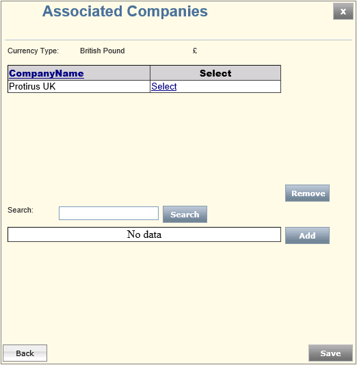
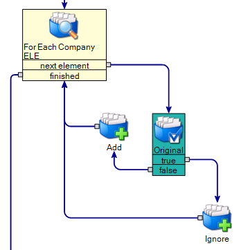
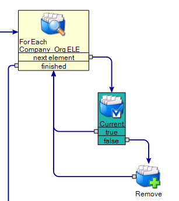
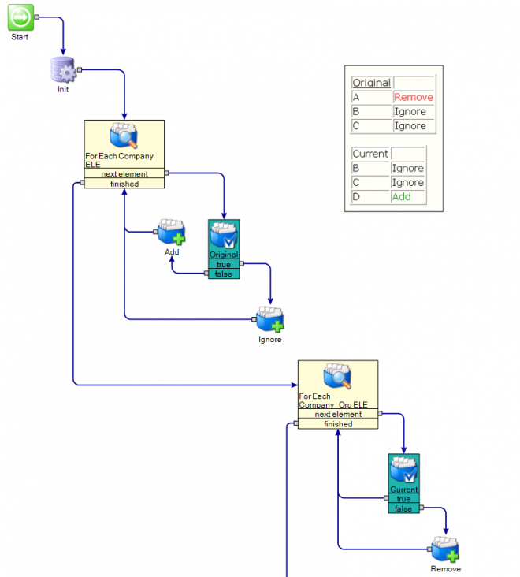
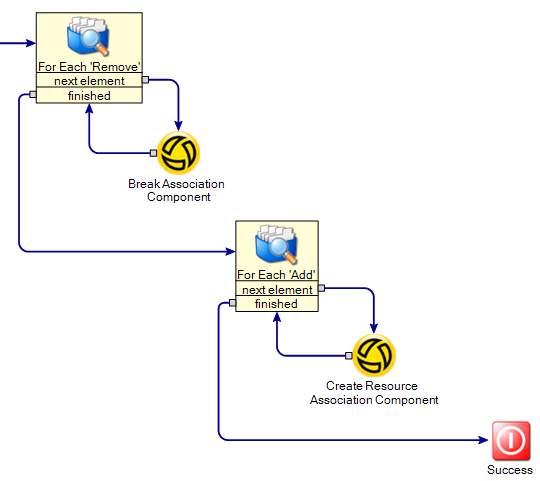

In this Article I will explain how to maintain a list using Workflow components.
In this example I have a Resource in the SMP of Company. This has a Currency Resource associated to it.
Instead of allowing the User to control this in the SMP I've written a Workflow to do the maintenance.
You retrieve the list from SQL (using the SQL Generator) then you wish to update it to reflect any changes, additions and deletions.
The user is able to add/remove values via a Web Form.

There might be lots of operations you need to perform with the chosen items so you need full flexibility of the items that have been modified.
The form shows this list in a grid, you allow the user to add/remove items,
In this case we Originally have A, B and C in the list, we remove A and add D.
| Original | |
|---|---|
| A | Remove |
| B | Ignore |
| C | Ignore |
| Current | |
|---|---|
| B | Ignore |
| C | Ignore |
| D | Add |
My method is to get the Data, ListA, create a copy ListA_Copy,
This gives you the Original List you can use to compare later.
Now create three more empty arrays
- Ignore
- Add
- Remove
The user interacts with the Form, adding and removing any necessary items.
When the user clicks Save we can perform some maintenance,
Loop the current list (ListA)
Use an 'ItemIsInCollection' to check the current item in the loop already exists in the original (ListA_Copy).
If it does add it to the Ignore array, if it doesn't add it to the Add array.
Current Loop

Next we want to loop the original list (ListA_Copy) and check if any items have been removed.
If they have add them to a Remove array.
Original Loop

Both

Now we can use these Add/Remove arrays to perform the necessary tasks, you could add/remove them from SQL, break/create associations, whatever is needed.
